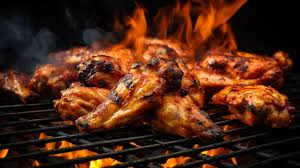

Barbecue, often referred to as BBQ, is more than just a cooking method; it's a culinary tradition deeply rooted in cultures around the world. Originating centuries ago, barbecue involves slow-cooking meat over low heat, often with the use of smoke or charcoals, resulting in tender, flavorful dishes. Whether it's ribs, brisket, chicken, or vegetables, barbecue transforms simple ingredients into mouthwatering delights, infused with smoky aroma and savory goodness. Beyond its culinary appeal, barbecue holds a special place in gatherings and celebrations, bringing people together to share stories, laughter, and, most importantly, delicious food.
Control the Temperature: Maintain a consistent cooking temperature throughout the process. For low and slow cooking methods like smoking, aim for a temperature between 225-275°F (107-135°C). For direct grilling, aim for medium-high heat, around 350-400°F (175-205°C). Invest in a good quality meat thermometer to monitor the internal temperature of the meat accurately.
Back